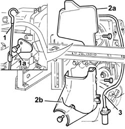
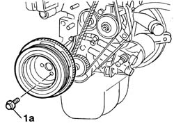
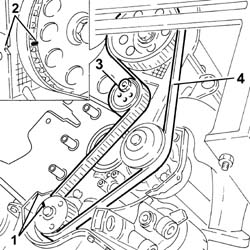
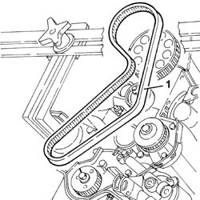
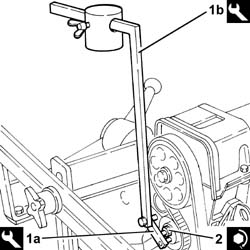

1032B16 toothed timing belt - r r with engine removed
- Path
- Procedures > 10 ENGINE UNIT > 1032 TIMING SYSTEM > 1032B belt timing system > 1032B16 toothed timing belt - r r with engine removed
- Kind
- repair procedure (removal / refitting; the operation number is the code)
- Applies to
- engines: 1.2 8v; all production periods
- Interactive page
- https://sloeber94.github.io/elrnDB-fPnd/en/#/2753383
Applies to: engines: 1.2 8v; all production periods
 Removing
Removing
 Refitting
Refitting1004D40 engine - position on stand and remove
1. Undo the bolt (1a) and remove the engine oil dipstick.
2. Remove the upper shield (2a) and the lower shield (2b) for the timing drive belt.
3. Disconnect the electrical connection, release the electrical cable for the rpm and T.D.C. sensor from the fastenings on the protective timing belt covers and remove the rpm sensor.
 | Name | Connector |
|---|---|---|
- | Rpm sensor | K46 |

Applies to: engines: 1.2 8v; all production periods
1. Undo the bolts (1a) and remove the auxiliary shaft pulley on the crankshaft.

Applies to: engines: 1.2 8v; all production periods
1. Rotate the toothed pulley so that the timing notches are aligned.
2. Check that the timing reference on the timing driven pulley is aligned with the reference on the cylinder head.
3. Loosen the timing belt moving tensioner nut.
4. Remove the timing drive belt.

Applies to: engines: 1.2 8v; all production periods
Refitting
RemovingCheck that the timing references on the driven pulley and the drive pulley are still aligned during the removal.
1. Fit the timing belt.

Applies to: engines: 1.2 8v; all production periods
1. Fit the tools (1a) and (1b) on the timing belt moving tensioner.
 | Name | Country |
|---|---|---|
1a | Belt tensioner | 1.860.745.300 |
| Name | Country |
|---|---|---|
1b | Belt tensioner | 1.860.745.100 |
Let the timing belt bed in by rotating the crankshaft through two revolutions in its direction of rotation.
2. Tighten the nut fixing the timing belt moving tensioner to the recommended torque.
 | Fastening | Component | Ø | Value (daNm) |
|---|---|---|---|---|
2 | Nut | MOBILE TIMING TENSIONER | M8 x 1.25 | 2.8 |

Applies to: engines: 1.2 8v; all production periods
Refit the lower shield and the upper shield for the timing drive belt.
Fit the auxiliary shaft drive pulley on the crankshaft and tighten the fixing bolts to the recommended torque.
| Fastening | Component | Ø | Value (daNm) |
|---|---|---|---|---|
- | Bolt | CRANKSHAFT PULLEY | M8 x 1.25 | 2.2 |
Fit the rpm and TDC sensor and secure it using the bolt and reconnect the connection.
| Name | Connector |
|---|---|---|
- | Rpm sensor | K46 |
Fit the engine oil dipstick.